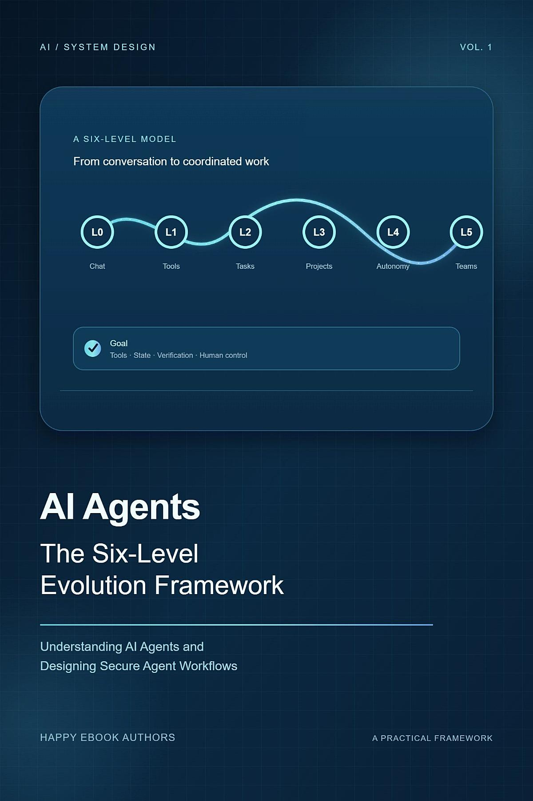

AI Agents: The Six-Level Evolution Framework
Volume 1: Understanding AI Agents and Designing Secure Agent Workflows

AI Agents: The Six-Level Evolution Framework
Volume 1: Understanding AI Agents and Designing Secure Agent Workflows
AI agents are more than chat interfaces. They can read information, use tools, execute multiple steps, maintain state, and produce work for people to review. The central design question is not “How autonomous can an agent be?” but “What is the lowest level of autonomy that can complete this task safely and verifiably?” AI Agents: The Six-Level Evolution Framework introduces a practical L0–L5 model: Chat Assistant, Tool User, Task Executor, Project Agent, Autonomous Worker, and Multi-Agent System. Volume 1 explains how to select a level, define a task contract, limit permissions, use sandboxes, preserve state, verify results, test failure cases, roll back safely, and retain human responsibility for high-impact decisions. Designed for technical leads, developers, analysts, product owners, educators, and professionals planning practical AI-agent workflows.